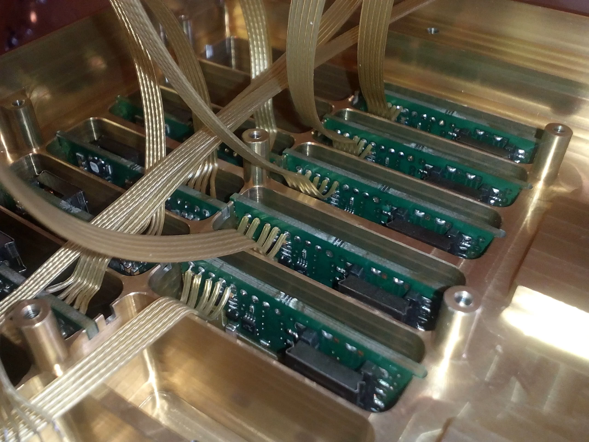

シングルチャネル HV モジュール
HV3 シリーズ。±150 V～±6000 V。入力 +12 V ±10%。正極性・負極性構成。技術マニュアルはご請求に応じて提供。
150 V – 6000 V ITAR フリー 宇宙認定
ピエゾアクチュエータ用 HV モジュール
高速・超低ノイズの 4 象限 HV 電源システム。−700 V～+700 V。電流の供給と吸収の両方が可能。
4 象限 超低ノイズ 容量性負荷 25 nF まで
カスタム HV システム
カスタムアルミハウジング、電子制御基板、HV ケーブルを備えた完成システム。標準またはカスタム HV モジュール。ミッション仕様に合わせて設計。
カスタムハウジング カスタム制御基板 宇宙・地上